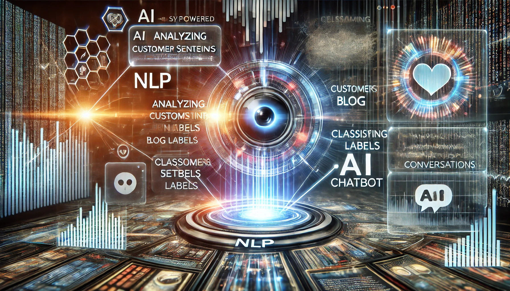

About Me
I am a PhD candidate at the University of Texas at Dallas specializing in Computer Engineering with a focus on hardware security using AI. With over a decade of academic and industry experience, I aim to innovate in secure and intelligent hardware systems.
Teaching
My teaching centers on active, project-based learning in STEM with inclusive pedagogy and authentic lab experiences. I emphasize hands-on labs, responsible AI/ML literacy, and transparent, flexible assessment.
Teaching Experience
Courses Taught (selected)
Fundamentals of Digital/Analog Circuits, Functional Verification — UTD (TA / Guest Lecturer)
- Ran laboratory sessions; created hands-on experiments (Arduino/Tinkercad, oscilloscopes, AD2).
- Designed rubrics aligned with ABET outcomes; supported 100+ students/semester.
- Integrated Python + Jupyter for rapid data analysis in labs.
Embedded Systems, Digital Circuits, IoT, Industrial Automation — RGIT (Instructor)
- Developed syllabus and built an Industrial Automation Lab (Siemens S-1200 PLC, Emerson Delta-V DCS).
- Led multi-week projects (sensing, actuation, control, dashboards).
Additional Topics
- Control Systems, Image Processing (lecture + lab support).
- Guest modules in Applied Cryptography (security labs and demos).
Evidence of Teaching Effectiveness
Summarize evaluations and provide context (course level, class size). Add what you changed and how it improved learning.
| Year | Course | Role | Class Size | Overall (/5) | Dept Avg |
|---|---|---|---|---|---|
| 2018–19 | Image Processing | Instructor | 60 | 4.7 | 4.2 |
| 2018–19 | Process Automation | Instructor | 60 | 4.6 | 4.2 |
| 2020–21 | Internet of Things | Instructor | 60 | 4.7 | 4.3 |
| 2020–21 | Biosensors & Signal Processing | Instructor | 60 | 4.5 | 4.3 |
Mentoring & Advising
Highlight supervision of student projects (UG/Grad), outcomes (awards, publications, placements), and your mentoring approach.
Selected Projects
- Analog Circuit Security (UG Capstone): supervised PCB prototyping + SPICE modeling → poster prize.
- Battery Anomaly Detection for Drones: mentored MSP432-based data collection + TinyML baseline.
- Graph Learning for Circuits: guided dataset preparation and evaluation scripts.
Student Project Sample
IoT-Based Weather Reporting System (2020)
Students: Akshay Chavan, Radhika Kamble, Tanvi Nanekar, Anjali Rane
Guide: Prof. Dipali Joshi-Jain
Highlights: Cloud-connected weather station using Raspberry Pi/ESP8266; sensors (temperature, humidity, pressure, rain); ThingSpeak cloud; mobile/web dashboard.
Presentation (PDF)
Diversity, Equity, and Inclusion
I design for inclusion by lowering hidden curriculum barriers, building community, and giving multiple pathways to demonstrate learning.
Inclusive Practices
- Structured team formation to balance backgrounds and experience.
- Multiple demonstration pathways (notebooks, lab videos, reflective memos).
- Transparent rubrics and early exemplars to reduce ambiguity.
- Office-hour triage and peer shout-outs to foster community.
Wellness & Belonging
As a certified yoga instructor, I integrate brief optional mindfulness/wellness micro-sessions during intense lab/exam periods to support focus and stress management, especially for first-gen and international students.
Outreach & Service
Organized cultural events and community clean-ups; mentored diverse students transitioning to project-based ECE courses.
Appendices & Downloads
Curriculum Development
Lab Materials
Student Project Samples
Recognition & Awards
Skills
Here’s an overview of my technical expertise, tools I work with, and soft skills:
Technical Skills
- Python
- C++
- C
- Machine Learning
- Deep Learning
- Hardware Security
Tools
- Cadence
- PyTorch
- HSpice
- MATLAB
- LabVIEW
- TensorFlow
- Git & GitHub
- Jupyter Notebook
Soft Skills
- Team Collaboration
- Critical Thinking
- Problem Solving
- Time Management
- Adaptability
Projects
Basketball Best Team Selection
Using bi-variate and multivariate EDA techniques to get data-driven insights on recommending teams.

Automotive Surveillance
Deep Learning and a clickable GUI-based interface (Flask) to monitor vehicle activity.

Determining Signal Strength or Quality
Machine Learning model to predict the equipment's signal quality using a Neural Network regressor.
Sequential NLP Classifier
Built a sequential NLP classifier to determine customer sentiments, identify the labels of blogs, and create a chatbot.
Publications
- "Trojan Localization in Generic AMS Circuits from Combined Functional and Power Measurements" - IEEE International Symposium on Hardware Oriented Security and Trust (HOST), 2025 (accepted, yet to be published)
- “A Hybrid Machine Learning and Numeric Optimization Approach to Analog Circuit Deobfuscation” - ASP-DAC, 2025.
- “Towards Machine-Learning-based Oracle-Guided Analog Circuit Deobfuscation” - IEEE International Test Conference, 2024.
- "On Hardware Trojan Detection using Oracle-Guided Circuit Learning." - Great Lakes Symposium on VLSI 2024.
- "Comparison of Particle Swarm Optimization and Ziegler Nichols Techniques" - International Journal for Research in Engineering Application & Management (IJREAM), 2021.
- Classification of Brain cancer using artificial neural network" - IEEE International Conference on Electronic Computer Technology, 2010.
Career Journey
Here’s an overview of my professional milestones and academic achievements:
PhD Candidate
2022 - PresentUniversity of Texas at Dallas, specializing in hardware security and AI-driven innovations.
Teaching Assistant
2024 - 2025Assist undergraduate students for Fundamental 1 lab
Research Assistant
2022 - 2024Worked on analog circuit security and developed machine learning models for circuit deobfuscation.
Assistant Professor
2010 - 2022Taught undergraduates Instrumentation and Control subjects for Mumbai University.
Contact Me
Feel free to reach out for more information: